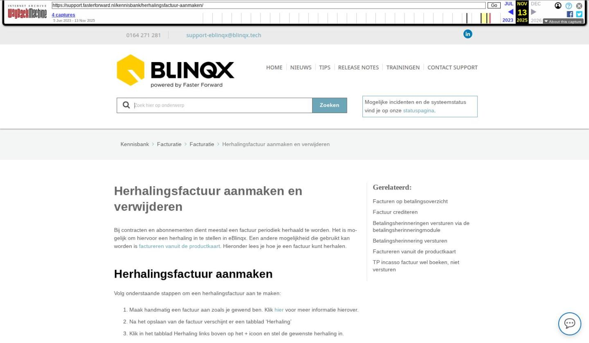

Herhalingsfactuur aanmaken en verwijderen

Tekstinhoud
Herhalingsfactuur aanmaken en verwijderen
Bij contracten en abonnementen dient meestal een factuur periodiek herhaald te worden. Het is mogelijk om hiervoor een herhaling in te stellen in eBlinqx. Een andere mogelijkheid die gebruikt kan worden is factureren vanuit de productkaart. Hieronder lees je hoe je een factuur kunt herhalen.
Herhalingsfactuur aanmaken
Volg onderstaande stappen om een herhalingsfactuur aan te maken:
Maak handmatig een factuur aan zoals je gewend ben. Klik hier voor meer informatie hierover.
Na het opslaan van de factuur verschijnt er een tabblad ‘Herhaling’
Klik in het tabblad Herhaling links boven op het + icoon en stel de gewenste herhaling in.
Vervolgens worden de herhalingsfacturen gepland.
Let op! De herhalingsfacturen worden standaard op de ingevulde factuurdatum aangemaakt. Indien je dit anders ingesteld wilt hebben, bijvoorbeeld 5 dagen van te voren, dan is dit handmatig aan te passen. Het inplannen van herhalingsfacturen stelt je in per administratie:
Ga naar de Module ‘Financieel’;
Ga naar ‘Stamgegevens – Onderhoud Administraties’;
Open de betreffende administratie;
Geef onder ‘Automatisch factureren’ en ‘Herhalingsfacturen aantal dagen vooruit aanmaken’ het aantal dagen aan dat de factuur eerder klaargezet moet worden. Deze staat standaard op 0, wat inhoudt dat de factuur op de datum zelf wordt aangemaakt.
Factuur verder verwerken
De herhalingsfactuur wordt alleen aangemaakt. Je dient deze zelf nog goed te keuren en te boeken. Dit kan via de workflow vanuit het dossier of het facturenoverzicht. Of je kunt de facturen in één keer goedkeuren en boeken vanuit het facturenoverzicht en de knop ‘Acties’ (indien de workflow hiervoor is ingericht).
Herhalingsfactuur verwijderen
Het is mogelijk om herhalingsfacturen te verwijderen. Hierin kun je kiezen voor het verwijderen van alle herhalingsfacturen of alleen de herhalingsfacturen die nog verwerkt moeten worden.
Laatste update: 15 oktober 2025
Tagged: factuur
Was deze informatie nuttig?
Ja Nee